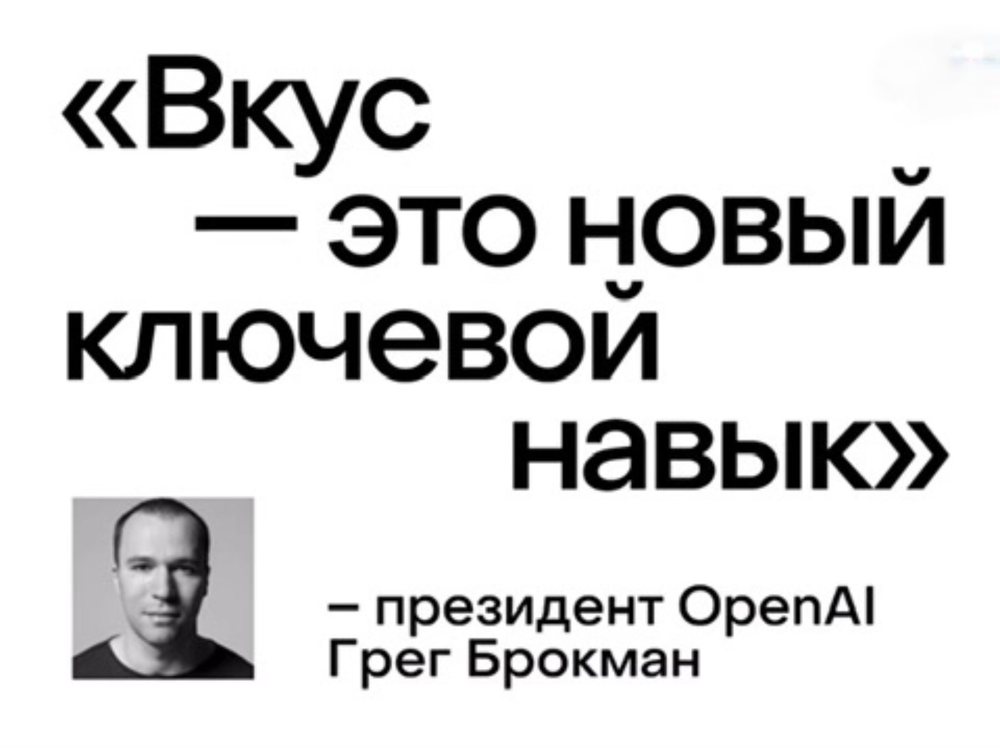
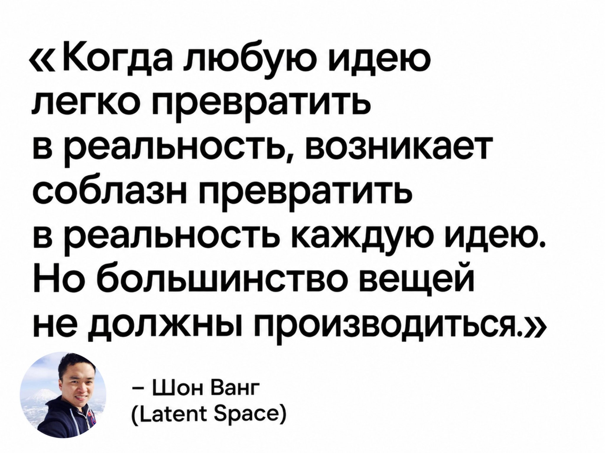
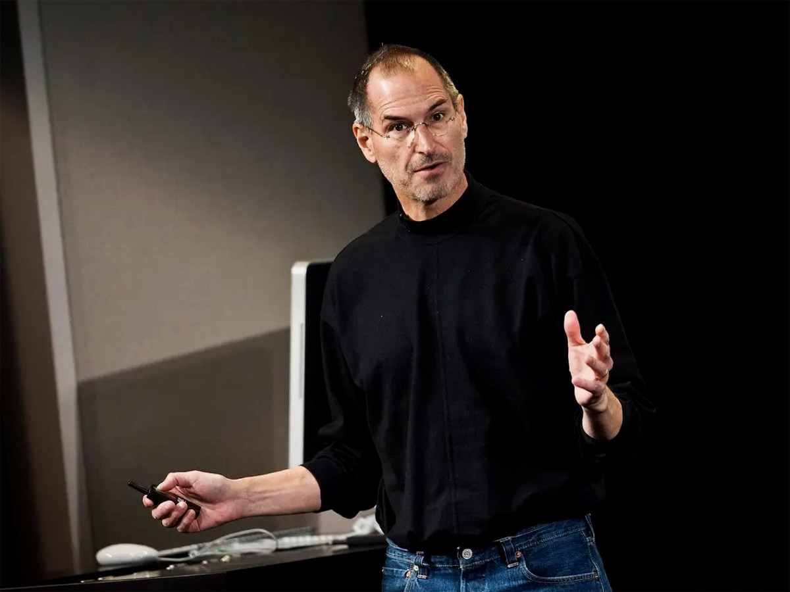
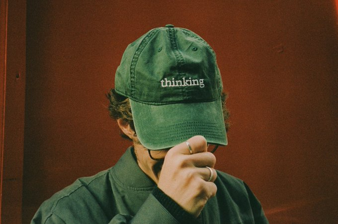
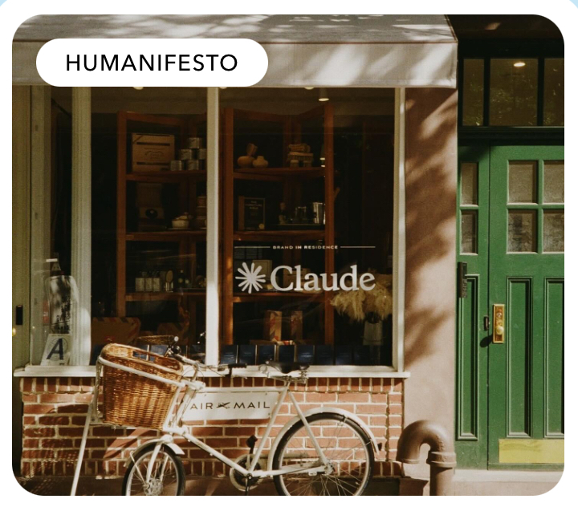
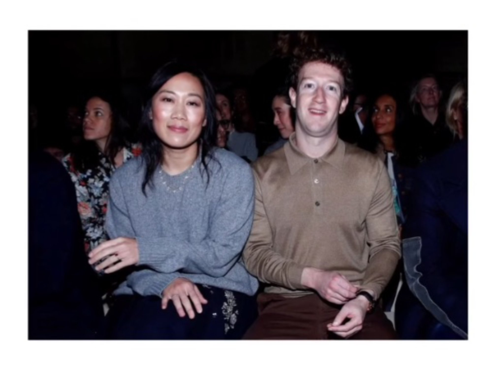

NYT, Guardian и New Yorker одновременно написали про вкус. Кремниевая долина скупает эстетику. Разбираю, почему Pinterest оказался в центре.
Час в день на Pinterest - вот так буднично, в одном ряду с просмотром Уэса Андерсона. За два года работы с платформой я часто задумывалась о том, какую глобальную миссию она несет, и как мы незаметно впитали в себя целую философию взаимодействия с визуальным миром в контексте Pinterest-эстетики.
Слово «эстетика» в русском языке поменяло значение примерно так же быстро, как «вкус» в Кремниевой долине. Раньше это была наука о прекрасном, теперь это хэштег: эстетика книжного клуба, эстетика старых денег, эстетика заброшенного особняка. Каждая «эстетика» - маленькая роль, которую человек примеряет, собирая пины. Доска «маленькая квартира мечты» рассказывает в первую очередь о том, какой человек хочет быть, когда туда переедет. Pinterest стал местом, где люди ищут версию себя.
В мае 2026 года три англоязычных издания почти одновременно вышли со статьями на одну тему - The Guardian, The New York Times и The New Yorker. Совпадение у трех изданий такого уровня - это уже заявка на смену системы координат.
Тема - вкус. Не в смысле «у моей бабушки вкусные пирожки», а вкус как навык, который сейчас вдруг стал стоить денег. И больших.

«Вкус - это новый базовый навык», - написал Грег Брокман, президент OpenAI. Брокман - человек из сообщества, в котором норма все измерять цифрами, KPI и метриками. И вот он пишет про вкус. Звучит как диагноз.
Эту тему и десятки других разбираем в Pinterest-сообществе в Telegram. Если Pinterest для вас не просто «ещё одна соцсеть» - вам к нам:
Подписаться на @pinsprint →Чтобы понять, насколько это сдвиг - вспомните 2010-е. Главным словом Кремниевой долины было «disruption» - разрушение. Под это слово стартапы привлекали миллиарды. К 2026-му его место занял «taste». Вкус.
ИИ демократизировал производство. Любой человек может за вечер собрать сайт, сгенерировать логотип, написать код, создать рекламный макет. Технически результат выглядит прилично. Но интернет начал захлебываться потоком этого контента - и для него появился термин: AI slop. Цифровой шлак.

Если слишком много производится, говорит Ванг, результат - именно тот самый slop. Гейзер сгенерированных ИИ медиа, который затопил наши ленты. Противоядие от него - вкус как человеческое суждение, которое направляет машину и выбирает между ее бесчисленными результатами.
В качестве примеров хорошего вкуса Ванг приводит: Ferrari, спроектированный Джони Айвом, KPop Demon Hunters (анимационный хит Netflix) и Anthropic - ИИ-стартап, который в прошлом году открыл поп-ап в Нью-Йорке под названием Zero Slop Zone.
Парадокс в том, что технология, которая должна была обесценить человека, сделала ровно обратное. Чем больше однотипного контента генерируют нейросети, тем дороже становится способность отличить сильное от пустого.

В мире технологий принято считать, что у Стива Джобса был развитый вкус. Он носил специально сшитую водолазку Issey Miyake как личную униформу. Он считал элегантный дизайн продуктов Apple формой культурного просвещения масс. Он отменял продукты на стадии готовности к запуску, если ему не нравились их углы скругления.
Но рядовые сотрудники технологической индустрии не избежали стереотипа: серые толстовки, бездушные коворкинги, занудные хобби. Можно ли их переучить?
Гэннон считает, что нет. Точнее - что научить нельзя, можно только создать условия для самостоятельной работы. Час в день на Pinterest, фильмы Уэса Андерсона, работа над личным стилем - это режим жизни, а не образовательный курс.
Социолог Пьер Бурдье еще в 1979 году предположил, что вкус - это функция «габитуса» - совокупности установок, привычек и предрасположенностей, которые формируются у человека на протяжении всей жизни. Вкус складывается из тысяч мелких воздействий: того, что вы читали в детстве, какие фильмы смотрели подростком, в каких домах бывали в гостях. Это медленная работа десятилетий.
Поэтому ИИ не может скопировать вкус. Он копирует стиль - внешние признаки, но не процесс выбора, который этот стиль породил.
Не все согласны, что разговор о вкусе - это хорошая новость.
В широко обсуждаемом эссе «Против вкуса» инвестор Уилл Манидис назвал нынешнюю дискуссию «фундаментальным понижением человеческой деятельности».
«Это ставит человека в конец цепи создания, где он лишь оценивает уже сгенерированное», - написал Манидис.
Эмили Сигал, сооснователь бренд-консалтинга Nemesis (её клиенты - Louis Vuitton, Nike, Cash App), добавляет:
«Шаблонный вкус по определению плохой, потому что вкус по определению относителен. Нельзя просто скопировать чье-то ситуативное представление о хорошем вкусе и выдать его за хороший вкус.»
Иначе говоря: если все будут смотреть Уэса Андерсона и проводить час в день на Pinterest, через год у всех будет одинаковый «прокачанный вкус» - который перестанет быть вкусом и превратится в новый шаблон.
Параллельно с философской дискуссией техгиганты начали буквально покупать себе вкус.
Palantir - американская компания, известная контрактами с ICE и израильской армией - выпустила джинсовую рабочую куртку за $239. На сайте написано: «Крепкая утилитарность, вневременной стиль.» Все 420 штук раскупили за несколько часов.
Anthropic (создатели Claude) провели акцию с люксовой рассылкой Air Mail: открыли поп-ап точки в Нью-Йорке и Лондоне. Там раздавали кепки с надписью «thinking» и хороший кофе - без экранов и презентаций. На акцию пришло 5000 человек.


OpenAI запустила онлайн-магазин, стилизованный под сайт из 90-х: бежевая палитра, шрифт Times New Roman, gif-анимации.
На Met Gala 2026 года за одним столом сидели Джефф Безос, Марк Цукерберг, Сергей Брин и руководители TikTok, Instagram, Snap и Slack. Безос купил место главным пожертвованием в $10 миллионов. OpenAI, Meta и Snap взяли столики минимум за $350 000 каждый.

Журналист New Yorker Кайл Чайка дал этому название - taste-washing, по аналогии с greenwashing и pinkwashing. Только тут отмывают вкусом.
«Технологические прогнозисты превозносят свою тонкую человеческую интуицию, - пишет Чайка, - при этом с радостью автоматизируя все вокруг до полного уничтожения.»
Журналист The Guardian заканчивает свою статью неожиданно - историей про Билла Каннингема, легендарного фотографа уличной моды из New York Times, который умер в 2016 году.
Каннингем всю жизнь носил классическую синюю рабочую куртку. В документальном фильме о нем он объяснил, почему: он нашел такие куртки в Париже, увидев их на дворниках. Они были дешевыми, моющимися, удобными, с тремя большими карманами. «И мне понравился цвет», - сказал Каннингем.
Вот разница между вкусом и taste-washing. Вкус нельзя ни купить, ни масштабировать, ни поставить на конвейер. Он рождается там, где человек способен заметить красоту в простой рабочей куртке за двадцать долларов и носить ее всю жизнь, потому что в ней удобно и цвет хороший.
ИИ может сгенерировать миллион изображений такой куртки, но не объяснит, почему именно та, на дворнике в Париже, заслужила стать униформой.
Получается, что правы и те, и другие. Манидис прав: если свести вкус к перебору вариантов, которые выдала машина, человек и правда окажется в конце цепочки. Сигал права: если все будут развивать вкус по одному рецепту, на выходе получится новая форма одинаковости. Но Гэннон тоже прав - вкус формируется через практику. Просто эта практика работает только тогда, когда человек выбирает для себя, а не копирует чужой выбор.
Каннингем не листал каталог рабочей одежды. Он шел по Парижу, увидел куртку на дворнике и решил - мое. Это и есть вкус - способность заметить то, мимо чего другие проходят. И дальше жить с этим выбором.
Вопрос в том, есть ли среда, где такая практика выбора происходит каждый день, миллионами людей одновременно.
Возвращаемся к Гэннону и его рецепту. Час в день на Pinterest. Почему именно Pinterest?
В Instagram человек листает ленту - и его внимание захватывают чужие сторис, лайки, сравнения. Пассивное потребление с активной примесью социальной тревоги. В TikTok - видео, специально сделанные так, чтобы захватить дофамин-петлю.
На Pinterest человек ищет что-то конкретное. Вводит запрос вроде «маленькая ванная», «свадебный букет», «идеи для гостиной». Он находится в режиме планирования, а не развлечения. Он собирает, а не просто смотрит.
И главное действие, которое он совершает на платформе, - не лайк, не комментарий, не репост, а сохранение. Каждое сохранение - микро-решение в духе «это - я, это - моя жизнь, которую я хочу».
Из миллионов таких ежедневных решений складывается процесс формирования вкуса. Pinterest - среда, где вкус формируется через ежедневную практику выбора, в которой участвуют 619 миллионов человек в месяц.
Ваш пин - не реклама, а потенциальный кирпич в чьей-то картинке «я». Пин, который просто показывает товар, пролистают. Пин, который транслирует образ жизни, с которым человек хочет себя ассоциировать, сохранят - и через месяц или год, когда человек будет готов покупать, он вернется именно к вам.
Я говорю это не как теорию, а как наблюдение из цифр клиентских аккаунтов. Бренд керамики, который снимал кружки на белом фоне, получал ноль сохранений. Тот же бренд, который начал снимать те же кружки в уютных кухнях с утренним кофе и книгой, получил рост сохранений в восемь раз. Кружка одна и та же, изменился образ.
Перед каждой публикацией стоит задавать себе вопрос: «Кем себя почувствует человек, который это сохранит?» Если ответа нет, даже идеальный дизайн и правильные ключевые слова не помогут.
В мире AI slop побеждает не тот, кто производит больше, а тот, у кого есть вкус и умение создать образ, в который хочется попасть. Pinterest - единственная платформа, где этот образ конвертируется не в лайки, а в реальный трафик и продажи. 85% пользователей Pinterest совершают покупку после взаимодействия с контентом бренда.
Эван Шпигель, CEO Snap Inc., в той же статье NYT говорит:
«Каждый раз, когда технологи начинают говорить о вещах, которые трудно измерить, субъективны и связаны с человеческой эмпатией и чувствами - это шаг в правильном направлении. Мне нравится, что этот момент заставляет людей больше думать о том, что делает нас людьми.»
А что это за вещи - ну, это, видимо, дело вкуса.
«Быстрый старт» (1 200 ₽) - базовая настройка. Полный курс (4 900 ₽) - алгоритм, SEO, психология сохранений, батчинг, аналитика.
Купить на Zenclass →